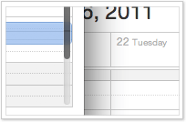

Только что допер, что самая круть новых скроллбаров (overlay scrollbars) во Льве — это то, что они больше не будут ужимать контент при появлении! Ничего не будет больше дергаться!!! Ура!
Я встречал эту надпись в Питере много раз, а в книге 101 things I learned in architecture school этой ступеньке посвящена целая глава:
One step between floor levels is rarely sufficient to create a meaningful differentiation of space. Often, it is an inconvenient people-tripper that can result in lawsuits
A three-step differentiation is usually the minimum that feels right.
То есть, люди просто не замечают разницы в уровне, если эта разница меньше определенной величины. И говорю я это не к тому, что это очень круто подмечено, а к тому, что про многие вещи просто никогда не задумываешься.

Никогда не меняйте смысл чекбокса на обратный, то есть когда "для того, чтобы что-то включить надо что-то выключить" (или наоборот). Это же противоестественно :)
На картинке показан клинический случай. А из классических примеров вспоминается инвертирование чекбокса на страничках логина с "запомнить меня на этом компьютере" на "не запоминать меня на этом компьютере" (отмеченный чекбокс будет означать абсолютно противоположные вещи), хотя вместо того, чтобы инвертировать смысл, достаточно всего лишь проставить правильное дефолтное значение.
И еще внезапно выяснилось, что смена языка интерфейса, часто помогает посмотреть на вещи совсем под другим углом :)
Небольшой и очень понравившийся мне отрывок из "Двенадцати стульев".
Клевый опыт, демонстрирующий прохождение луча света в струе воды, аналогично тому, как он распространяется в оптоволокне. Вот для чего нужны лазерные указки!
Martini — марка вермута (от немецкого Wermut, полынь) — крепленое вино, ароматизированное пряными и лекарственными растениями.
Думал, вдруг торкнет альбом, а он не торкнул, но вот этот трек очень даже)